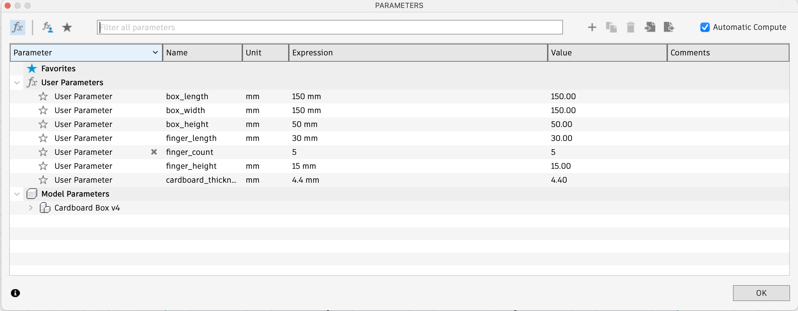
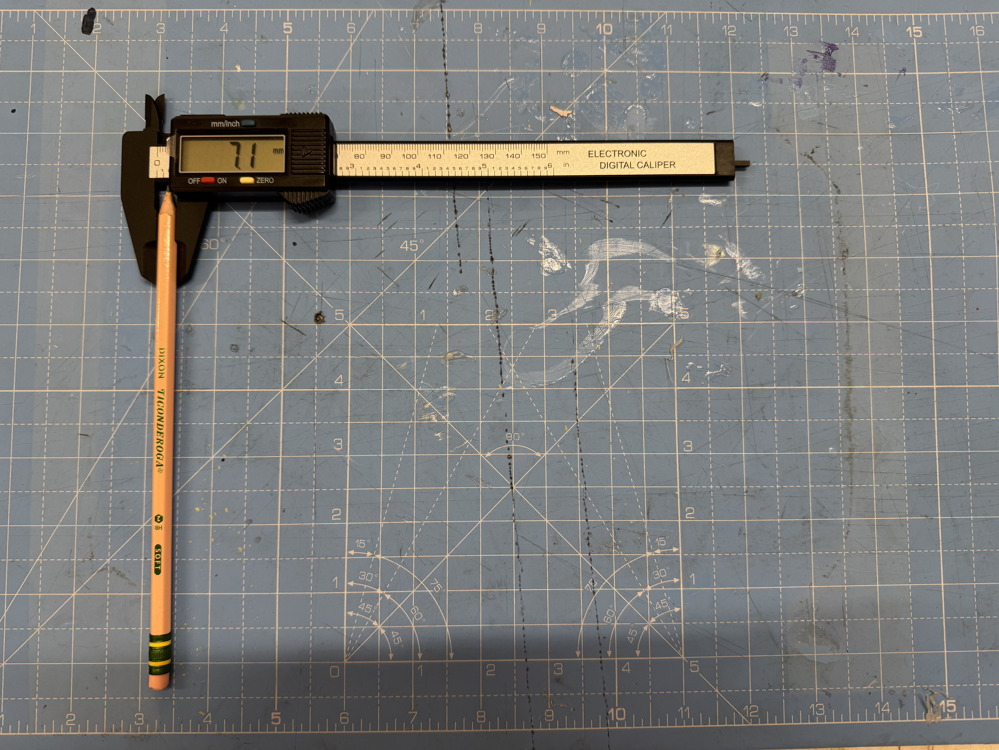
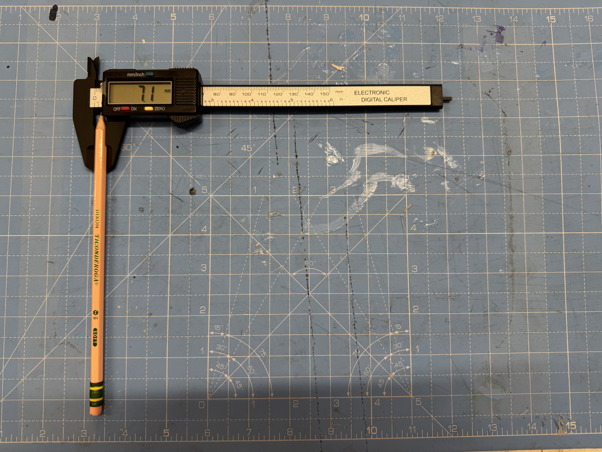
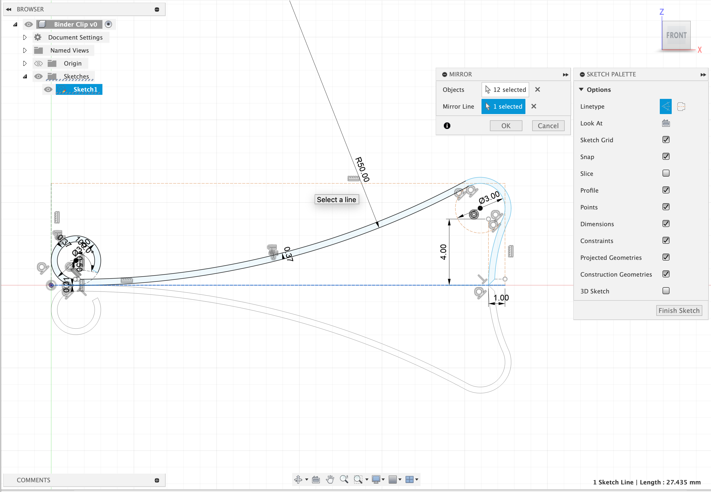
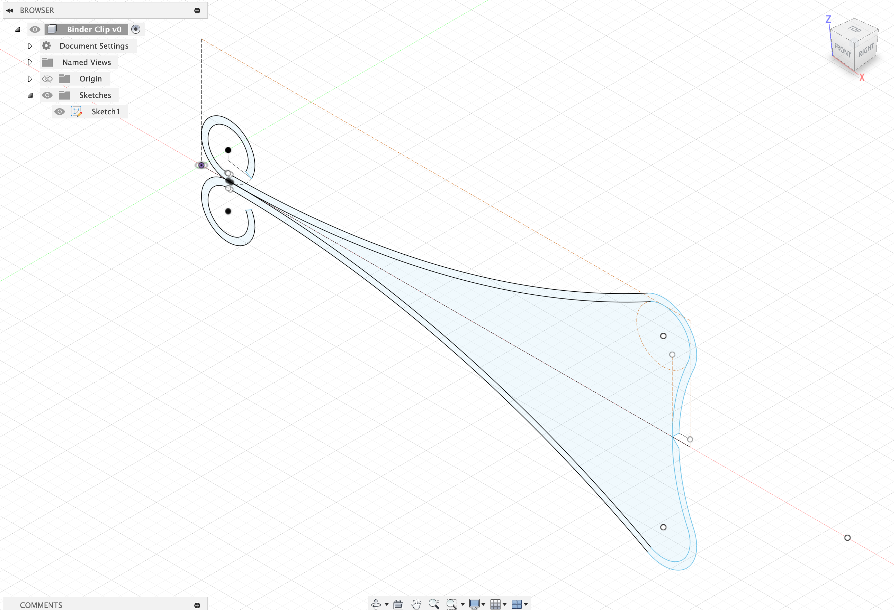
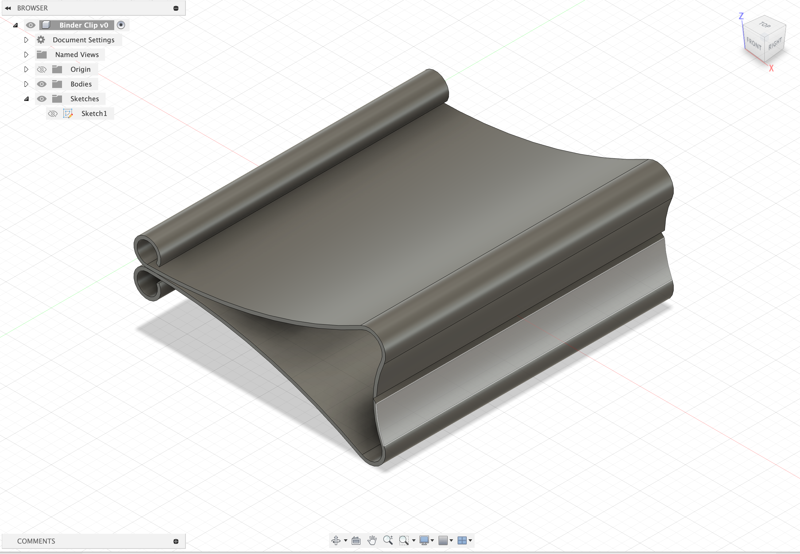

Week 02
Week 02 Overview
Hi everyone!! This week was a mixture of excitement & hoping that I wouldn't start a fire. Prior to this week, I have never worked in CAD modeling or operated power tools, saws, or worked with metal. I completed the training at the Lyman Lab on this Monday (February 10th), and it was incredibly insightful & fun! One of the primary reasons why I have often avoided working with hardware is because making mistakes seemed to be significantly more "high risk," both from the perspective of not wanting to be unsafe and also not wanting to waste valuable material. However, throughout this week, I've made tons of mistakes (only one of which resulting in minor minor injury), and I have learned even more. Thank you so much for taking a look at my updates for our second week of class, where I am excited to introduce you to some of what I have learned and some of the mistakes that I've overcome.
My Cardboard Box
Starting with this week's cardboard box assignment, I decided to utilize the finger-sided cardboard box design from class this week. I attempted to recreate the design from class alongside custom designs on the sides for oval-shaped handles. However, due to mistakes in measurements, my original card board box seemed to have major holes in its walls as opposed to being helpful in carrying it around. Thus, I stuck to a simple design with 5 fingers on each side. I begun the creation of the box in Fusion by setting parameters that I found appropriate, which was quite helpful as I was able to adjust the entire design instantaneously as opposed to changing every side when I decided to increase or decrease the number of fingers. I originally started with 9, yet realized that the sides were a bit too small to be helpful. The box that I have displayed below includes the following parameters.

In my next iteration, I hope to increase the height of the box to ensure that it will be large enough to survive
the semester, and I also hope to score a design on one or more of the sides. I will update this page when I do so, but for now, feel free to take a look at my model through the photo below.
Or feel free to download it here! 👈
Photos
Household Objects #1: Pencil
I decided to start by modeling an item that I use the most: a pencil! While it is simple to picture one, I experienced some fun challenges while trying to make one. I started by measuring the pencil with calipers, helping me to create a starting sequence of parameters to input into Fusion. I decided to measure the height of the pencil with a rule, as it was too large for the calipers, which was around 190mm. Then, I measured the tip of the pencil, its diameter, as well as the height of the eraser holder & eraser separately.
 

When I started modeling the pencil in Fusion, I immediately began with a mistake as I worked with the "Inscribed Polygon" shape. I created a polygon with the constraints matching the diameter of the pencil,
and it took me a bit of time to realize that the inscribed polygon in Fusion uses a radius as an input. Once I fixed that mistake, the rest of my measurements made a lot more sense! (Picture a very thick pencil).
On the left, we can see where I have utilized the diameter as the radius, then the resolution as the second image, when I noticed that the circle model should be larger than the inscribed polygon.
After creating the basic structure in a 2D-sketch, I was able to use the revolve tool and the extrude tool to create the 3D model of the pencil.
I also used this opportunity to play with the appearance options in Fusion.
Below you, I encourage you to see a bit of my progress (and more mistakes), and feel free to download the project here.
Household Object #2: Binder Clip
To create an assembly, I decided to see if I could create a metal clip (a binder clip) as well. I often carry papers for classes with one of these clips, and of course a pencil for class! For this, I attempted (for 4 hours) to see if I could challenge myself to create the model without the help of online tutorials or instructions. While I learned a lot in this process about available tools and shapes, I ended up turning to a Youtube tutorial to help set me up for success. In particular, I found this one incredibly helpful, especially for envisioning how to approach the shape. This proved to be a much more difficult item to model than I anticipated, so here are a few sneak peeks of what the process looked like for me below. Feel free to download what I was able to finish here as well!
  Learning Fusion: Tutorials
Through this week, I've been utilizing many tutorials to help me understand how to use Fusion, and I've been doing a ton of exploration independently as well. A few tutorials that I have enjoyed include the following, many related to my project & love for coffee.